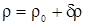

2 Звуковые волны в воздухе
Звуковыми
волнами
(звуком) называется процесс
распространения упругих колебаний малой амплитуды в сплошной среде. Область
среды, в которой распространяются звуковые волны, называется звуковым полем. При распространении
звуковых волн в газах и жидкостях смещение частиц среды происходят в направлении
распространения волн. Такие волны называются продольными.
Теория
звука в ее классической форме строится на основе законов движения жидкости и
газа с учетом ряда особенностей колебательных движений с малой
амплитудой.
Движение
жидкости и газа подчиняется законам гидро- и аэродинамики. Так как для жидкости
и газа они записываются в одинаковой математической форме, то мы будем говорить
об уравнениях гидродинамики, подразумевая под жидкостью также и
газ.
Уравнения
гидродинамики в общей форме являются нелинейными и весьма трудно поддаются
решению. Однако путем ряда предположений можно привести их к более простой
форме.
Перечислим
основные упрощающие предположения, справедливые для звуковых волн в
воздухе:
а)
пренебрегаем вязкостью и теплопроводностью воздуха;
б)
считаем воздух однородной, изотропной, линейной средой;
в)
предполагаем, что амплитуды колебаний давления, плотности и температуры звуковой
волны малы;
г)
процессы сжатия и расширения в звуковой волне считаем
адиабатическими.
Введем
ряд обозначений.
Пусть
ρ0
и Р0 – плотность и давление воздуха в состоянии
равновесия.
Тогда
при распространении звука в среде общее давление в произвольной точке
равно:
Величину
δp,
которая в звуковых процессах в газах обычно мала по сравнению с
Р0, будем обозначать далее через p
=
p(x,
y,
z,
t)
и называть звуковым
давлением.
Соответственно
для плотности:
,
где
<<1.
Аналогично
температуру среды можно представить в виде:
Т
= Т0 + δТ (x, y, z,
t)
где << 1 - относительная акустическая добавка к
температуре.
Видеофрагмент "Распространение звука" (1:53)